Chapter 3 Chemical Manufacturing Facilities
3.1 Coatings & Inks
3.1.1 Emissions
Introduction
Organic emissions from the manufacturing of coatings and inks are reported in this category. Coatings processes includes mixes, blends, or compounding of paints, varnishes, lacquers, enamels, shellac, or sealers from raw materials. Ink manufacturing involves mixes, blends or compounding other raw materials to produce the ink. Printing inks consist of pigments, which produce the desired colors, binders which lock the pigment to the substrate, and solvents, usually organic compounds that dissolve the pigments and binders. A majority of the emissions originate from mixing and cleaning operations. Throughput information of each source is reported by the facilities and is stored in the District’s Data Bank system.
Methodology
Organic emissions are calculated by using data on the reported throughput, the specific materials ( i.e. density, percent VOC in coatings, etc.) as supplied by the companies through the District “S” and “G” forms. The District updates the data each year on a source-by-source basis using as input:
Process material throughputs as reported annually by the chemical manufacturing companies.
Emissions factors (these may be source specific factors reported by the companies through source test results or applicable general factors, i.e. from the EPA).
Emissions control factors (device-specific or general - these may be supplied by the companies also).
The county, month, and day factors are obtained from the data bank’s information on each plant’s location, seasonal usage, and days per week of operation.
Monthly Variation
Monthly distribution was estimated based on major coatings and inks manufacturer’s reported quarterly percent throughput. An attempt was made to weight-average into monthly factor, with March through August being the high season and November and December being the lowest.
County Distribution
The county location of each company as reported in the Data Bank is used to distribute emissions into each county.
3.1.2 Trends
History
Emissions have been generally increasing due to increasing demand on coatings and inks, which has been about 4 to 8 percent per year in the 1980’s. District Regulation 8, Rule 35, pertaining to emissions control from mixing operations at coating and ink facilities was adopted in May 1984. Since the adoption of the regulation, there have been significant changes in the manufacturing process. It was estimated there was a 55% emission reduction due to the implementation of the regulation.
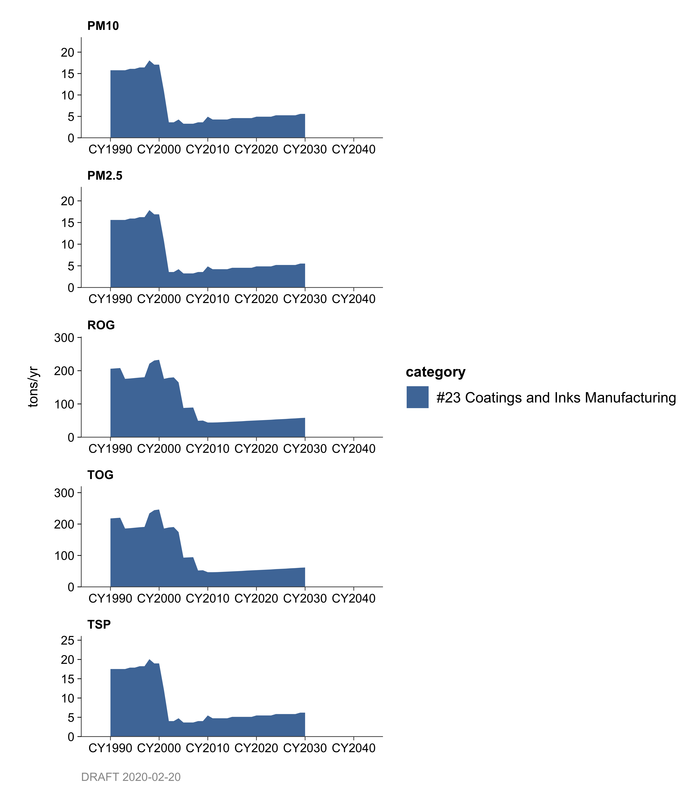
Growth
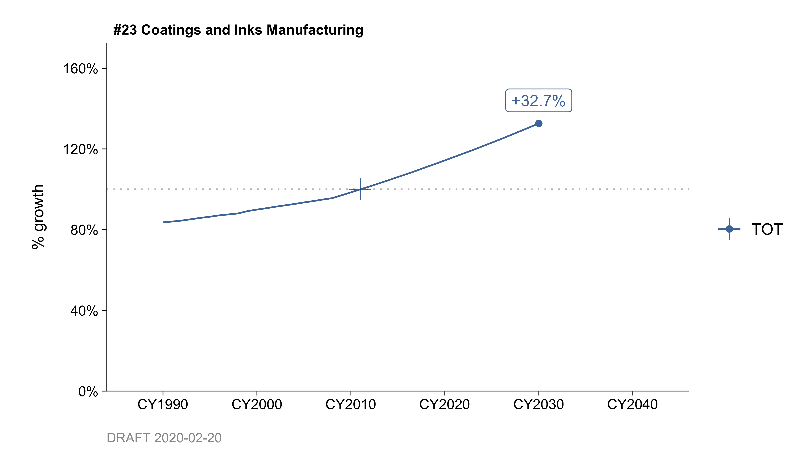
Projections to year 2030 was based on growth profile of ARB’s Manufacturing in the Printing Industry, and is expected to grow at a only 1-2 percent per year.
Control
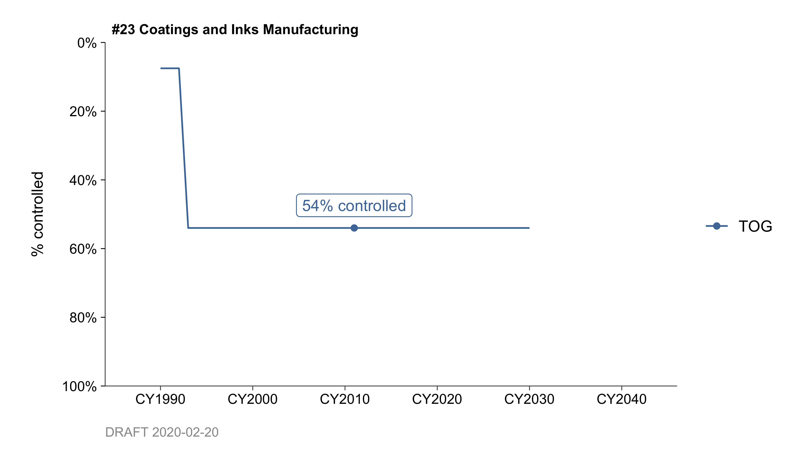
Regulation 8, Rule 35 was amended effective January 1993, eliminating the exemptions from small users, requiring lids on all portable and stationary mixing vats, and other cleaning provisions. Control effectiveness of the amended regulation has resulted in an 84% emission reduction since 1993.
By: Tan Dinh Date: January 2014 Base Year: 2011
3.2 Resins
3.2.1 Emissions
Introduction
Emissions reported in this category are from operations performed at resin manufacturing facilities. Resin is a semi-solid, water insoluble organic material with little or no tendency to crystallize under standard temperature and atmospheric conditions. Resins are the basic components of plastics and other surface coating formulations. Equipment used in the operations and manufacturing of resins include resin reactor vessels and thinning/blending tanks. The manufacturing of resins produces mostly organic emissions.
Methodology
Organic emissions are calculated based on throughput data, material description (i.e. density, percent VOC in coatings, etc.) as reported by the companies via the Bay Area Air District’s “S” and “G” air permit forms. The District obtain each year, as necessary, updates for the data during the permit renewal process. The data is gathered on a source- by-source basis using the following criteria as input:
Process material throughputs as reported annually by the chemical manufacturing companies.
Emissions factors (these may be source specific factors reported by the companies through source test results or applicable general factors, i.e. from the EPA).
Emissions control factors (device-specific or general - these may be supplied by the companies also).
In addition to criteria pollutants, greenhouse gases are also produced in the manufacturing of resins. The greenhouse gas emission factors are provided by the plants and in some instances where they are not supplied, they are taken from EPA literature/publications.
The monthly distribution is estimated based on data from the company’s reported quarterly seasonal percent throughput. The county location of each company as reported in the District’s record keeping system (Data Bank) is used to distribute emissions into each county.
3.2.2 Trends
History
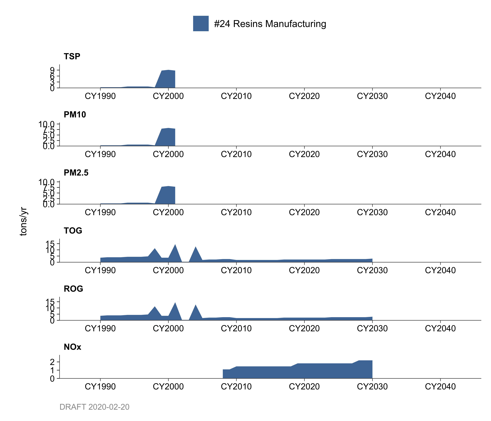
Emissions have increased due to increasing demand from related industries, such as plastics and coating manufacturers. District Regulation 8, Rule 36, limiting emissions from resin manufacturing operations was adopted in June 1984.
Growth
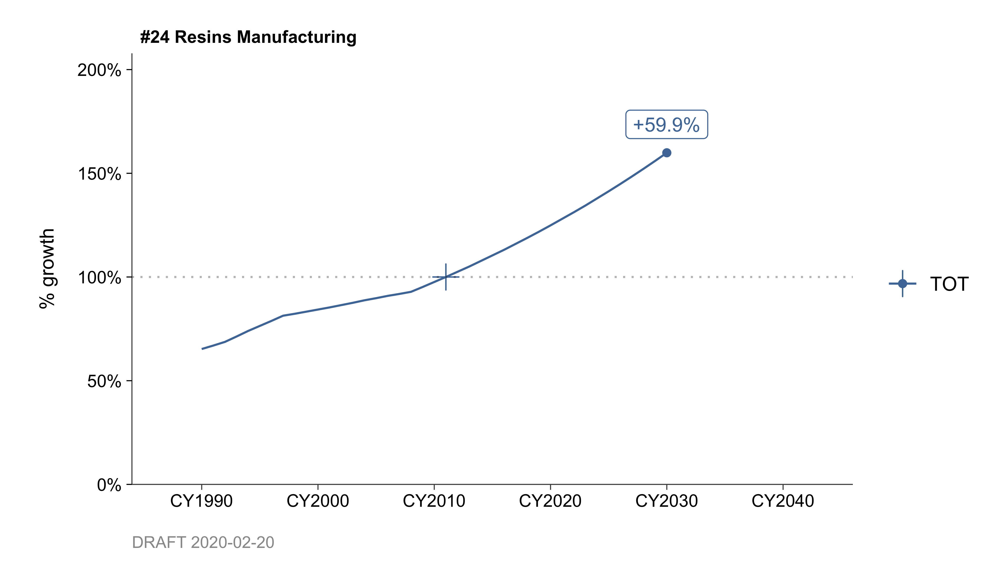
Projections to year 2030 were based on growth profile of ARB’s Chemical Manufacturing which is expected to grow at about 2-3 percent per year for the next few years.
Control
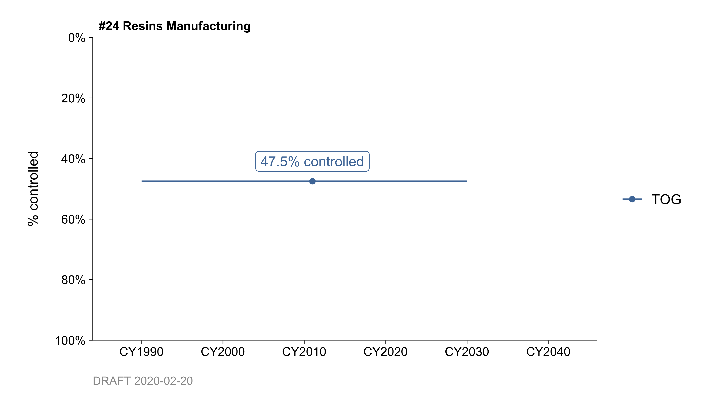
It is estimated that the District achieved a 52% reduction in organic emissions due to the implementation of Regulation 8, Rule 36.
By: Tan Dinh Date: January 2014 Base Year: 2011
3.3 Pharmaceuticals & Cosmetics
3.3.1 Emissions
Introduction
Emissions reported in this category are from the pharmaceuticals and cosmetics industry. The emissions consisted of both point (Category 25) and area (Category 1897) source emissions.
Pharmaceuticals manufacturing plants are those producing and/or blending chemicals for use in the formulation and production of pharmaceutical products. These consist of the manufacture, packaging, and sales of chemicals used as medication for humans and animals. Sources of emissions at pharmaceutical plants may come from batch process equipment, such as reactors, distillation units, extractors, centrifuges, filters, crystallizers, dryers, and storage and transfer.
Several different products are manufactured at Cosmetics products facilities. Organic chemicals are used as raw materials and solvents; such as ethanol, acetone, isopropanol, etc. are used. Solvent is recovered where convenient, and as a means of cost effectiveness. Emissions from these operations are almost entirely non-methane organic solvents.
There is a wide variety of products manufactured from these two industries, which may also include non-pharmaceuticals for preventive medicine and health-enhancement, medicated and non-medicated cosmetics, and food additives.
Methodology
The amount of solvent usage by the pharmaceutical manufacturers was estimated based on the U.S. Dept. of Commerce “Current Industrial Reports”, and the “Census of Manufacturers”. It was assumed solvent usage from the cosmetics industry was included from this estimate. Using one dollar per gallon of alcohol, the dollar estimate was converted to gallons. This amount was projected for Bay Area use with an annual growth rate of 2.6 % from 1993. It was assumed this is the total solvent usage by the pharmaceutical and cosmetics industries. The average solvent density was assumed to be 6.6 lbs./gal.
The District data bank reported point sources from several pharmaceutical companies. Throughput and other data information of each source are reported by the facilities. Emissions are calculated by using these data through the District “S” and “G” forms.
It is assumed there are also a number of other smaller pharmaceutical and cosmetics manufacturers, known as area sources, not included in the District data bank system. Subtracting the total solvent usage estimate from the point source usage yields an area source solvent usage. An uncontrolled emission factor of 330 lbs./1000 gallons is based on a 5% loss of the usage.
District Regulation 8, Rule 24, limiting organic compounds emissions from various pharmaceutical and cosmetics manufacturing operation took effect in July 1984 with an estimated 42% overall control.
Monthly Variation
Monthly distribution was assumed to be uniform.
County Distribution
The ratio of each County’s population was used to distribute emission into counties.
3.3.2 Trends
History
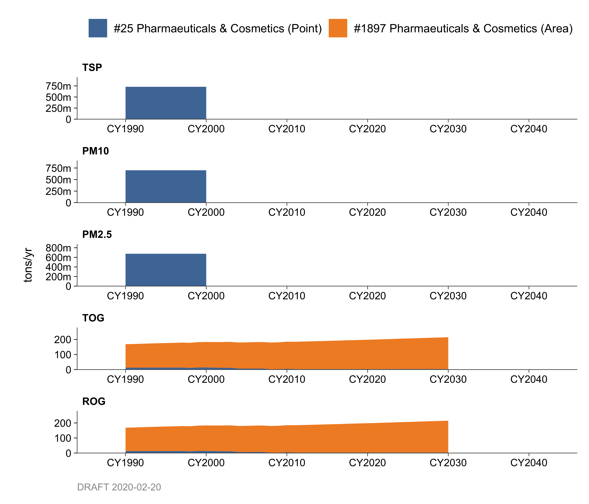
Emissions through the years were estimated by using the estimated solvent usage by the industry.
Growth
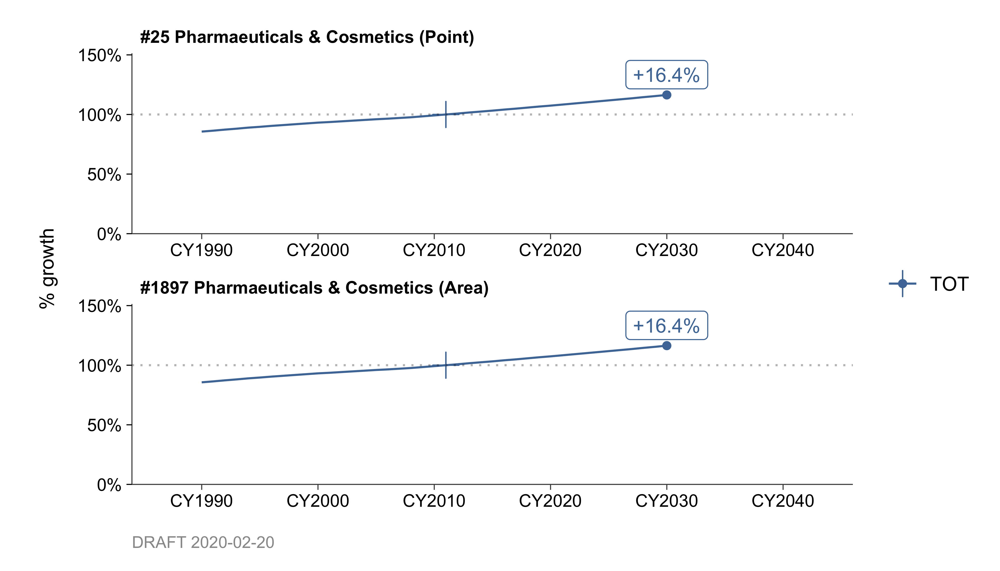
Emissions through the year 2030 are projected according to estimated growth prediction of pharmaceutical and cosmetic products industry. Approximately 0.8% per year of growth is expected in the next few years.
Control
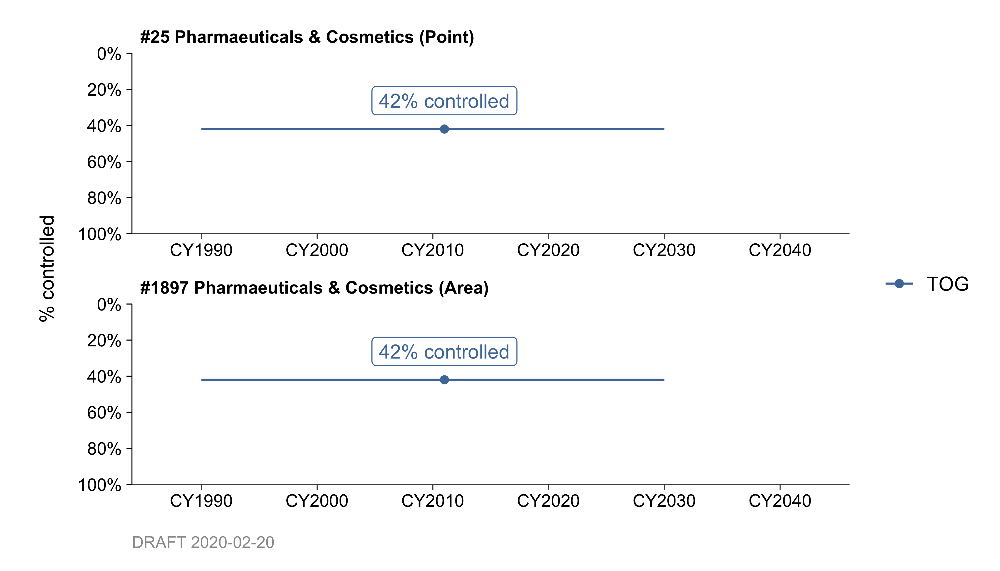
Efforts are being made to streamline and standardize rules and regulations. Any subsequent refinement in Regulation 8, Rule 24 due to this streamlining should not have any effect on the controls, and therefore the controls for this rule will remain at 42%.
By: Tan Dinh Date: January 2014 Base Year: 2011
3.4 All Other Chemical Plants
- Sulfur and Sulfuric Acid Manufacturing Facilities (#21, #22)
- All Other Chemical Plants Point Source Emissions (#26)
- Fugitive Emissions at Chemical Plants (#27)
3.4.1 Emissions
Introduction
Category 21 contains emissions from sulfur recovery units and sulfur storage at refineries and chemical plants. Category 22 contains emissions from sulfuric acid storage tanks at refineries and chemical plants. The emissions of concern from these categories are sulfur dioxide. Abatement devices to treat sulfur recovery units’ tail gas and sulfur dioxide scrubbers at sulfuric acid manufacturing plants have significantly reduced the amount of sulfur dioxide emitted. The emissions data shows that without the District’s controls, 150 tons per day of sulfur dioxide would have been emitted in to the atmosphere instead of approximately 3 tons per day.
Category 26 contains all other chemical plant point source emissions. Some of these sources include acid manufacturing plants, kiln burners, and specialty chemicals manufacturing plants. Emissions caused by the combustion of fuels at chemical plants are not accounted for in this category.
Category 27 contains fugitive emissions at chemical plants. Components such as valves, flanges, pumps, compressors, and pressure relief valves (PRVs) are potential sources that can leak due to seal failure. These emissions generally occur randomly and are difficult to predict. In addition, these emissions may be intermittent and vary in intensity over time. According to EPA report (EPA-625/10-84-004, Dec. 1984) 35% of the total emissions at the chemical manufacturing facilities are emitted as fugitive emissions.
Methodologies
These categories contain both point and area source emissions from chemical plants in the District. Most of the emissions (point sources) from chemical plants are accounted for through our permitting processes, however, Category 27 fugitive emissions (area sources) are not. Fugitive emissions for Category 27 were taken as 35% of the total organic emissions at the chemical manufacturing facilities (Categories 21 through 26) within the District. The number of equipment components was used as throughput.
Emissions for Categories 21, 22, and 26 were obtained from point source data only, as contained in the District’s data bank. The District updates the data each year on a source- by-source basis using as input:
Process material throughputs as reported annually by the chemical manufacturing companies.
Emissions factors (these may be source specific factors reported by the companies through source test results or applicable general factors, i.e. from the EPA).
Emissions control factors (device-specific or general - these may be supplied by the companies also).
Criteria pollutants and greenhouse gas emissions, including carbon dioxide (CO2), methane (CH4), and nitrous oxide (N2O), are produced in the chemical plant processes. Since these emissions are part of point sources, criteria pollutants as well as greenhouse gas data are obtained from the plant as part of the Bay Area Air District permit renewal process.
Monthly Variation and County Distribution
The county, month, and day factors are obtained from the data bank’s information on each plant’s location, seasonal usage, and days per week of operation.
3.4.2 Trends
History
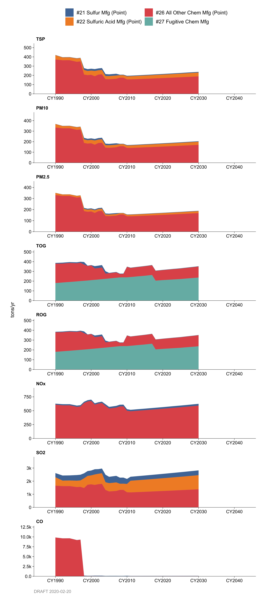
In general, emissions increase as throughputs increase. In addition to usage changes, new installations also increase the emissions. Overall emissions for these categories did not significantly increase in last eight years.
Growth
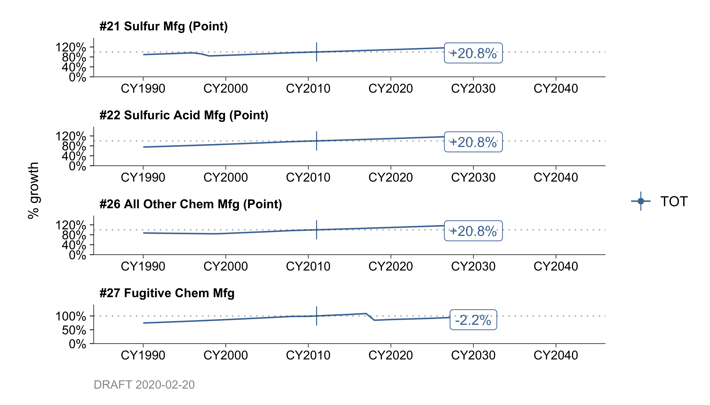
The projected growths in these categories are taken from expected growth in manufacturing employment over the region to the year 2030. The employment data was obtained from the Association of Bay Area Government’s (ABAG) 2009 “Projections” reports.
Control
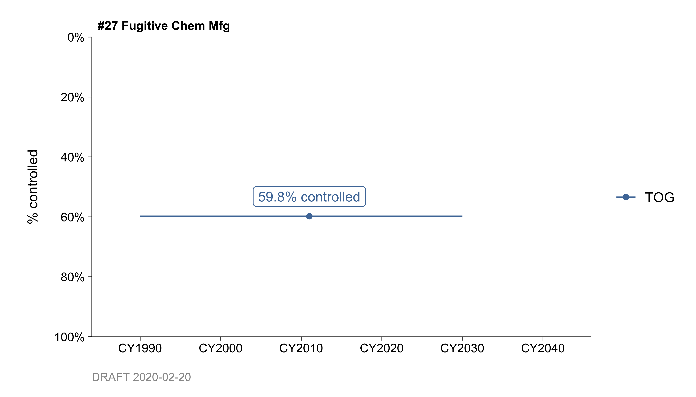
The District adopted Regulation 8, Rule 22 on March 5, 1980. The control afforded by this rule is estimated to be 60%, with rule effectiveness at 98% for an overall control rate of 59%. This rule only affects fugitive emissions at chemical manufacturing facilities.
Regulation 9 also controls non-organic emissions from many of the manufacturing plants in these categories. For example, the District amended Regulation 9, Rule 1 in 1983, 1992, and 1995 for sulfur dioxide limits at sulfur recovery systems and sulfuric acid plants. Regulation 9 also sets limits on hydrogen sulfide, nitrogen oxides, and carbon monoxide emissions.
By: Tan Dinh Date: January 2014 Base Year: 2011